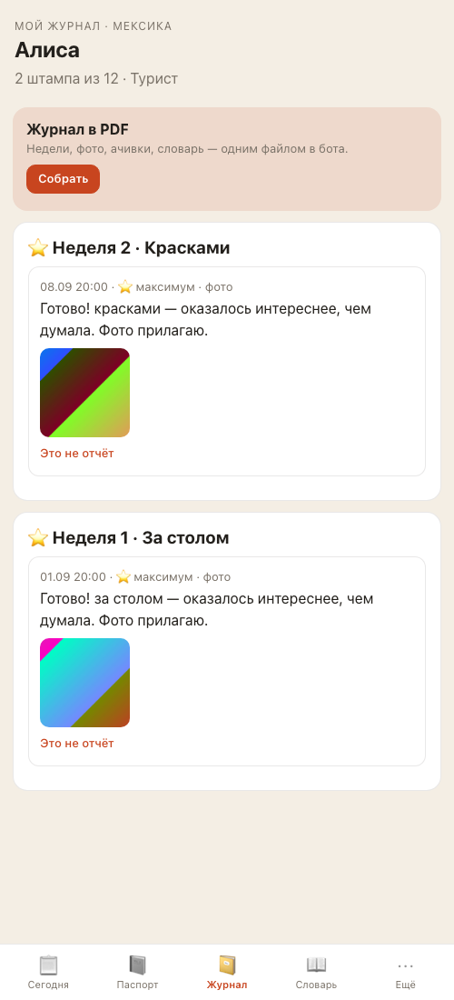
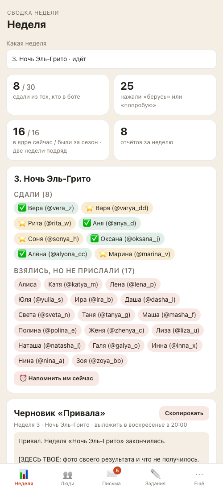
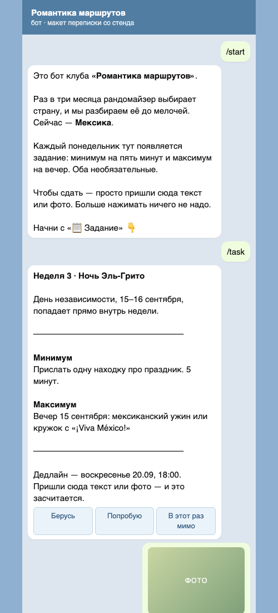

Отчёт по задаче 01 от 16 сентября 2026: в репозиторий бота положен порядок работы Милы через Claude Code. Код бота, приложения и воркера не менялся; участницы не заметят ничего. Читатели — Дима (принимает) и Мила (узнаёт, как теперь просить правки).
/release-check с описанием по-английски; всё остальное приходилось объяснять словами, а Claude вспоминал процедуру из длинного CLAUDE.md. Точек входа для человека, который не читает код, не было./zadacha (принять задание), /stend, /proverka, /relize, /otchet, /avaria, /status, /prod. Мила говорит «хочу, чтобы…» — Claude сам называет маршрут и достаёт нужную процедуру.brain/: карточка на каждую задачу, план и отчёт страницами рядом, автоматический список задач, баги, идеи, снимки прода, журнал самого харнеса. «Что у нас» — и Claude пересказывает, на чём остановились.


| Ступень | Что проверяется | Кем | Слово Милы |
|---|---|---|---|
Перед dev | make check, тесты самой правки, прогон фичи на стенде с чтением логов, ревью кода | верификатор + два критика | «ок» на план, потом «сливаем» |
| Перед продом | то же плюс сценарии e2e, регресс из тринадцати шагов, границы и параллелизм, данные и миграции, живой прогон в Telegram руками | четыре-пять критиков + Мила и Claude в Telegram | «выкатываем» — после числа активных участниц и предложенного окна |
| Микро-правка | make check, ревью кода, экран с изменённым текстом | верификатор + критик кода | одно «ок» |
| Авария | бэкап → причина по логам → откат или минимальный фикс → проверка | Claude сам | не ждёт; сообщает после |
Каждый критик обязан приложить доказательство — файл и строку, запрос и ответ, строки логов, скриншот; «проверено» без доказательства не принимается. Правило «код по-английски, людям по-русски» держится тестом: кириллица в имени функции или файла роняет приёмку.
make check на ветке harness: ruff, формат, mypy, pytest — 444 теста из 444 (было 425; добавлены приёмка харнеса, приёмка языка кода, демо-данные, генератор бэклога, макет переписки).up → 30 участниц, 44 отчёта, 22 фото, 5 писем; down сохраняет данные, up продолжает, reset пересобирает; restart помнит режим. Логи стенда без ошибок.@romantika_staging_bot начал опрос — строка bot_started в .dev/logs/bot.log.scripts/shots.sh --page all — 8 экранов; макеты: три сценария (start, report-photo, passport).scripts/prod-snapshot.sh — 18 секунд, healthz ok, бэкап проверен восстановлением 13 сентября, ошибок в логах 0; снимок сохранён в brain/ops/, персональных данных в нём нет (проверено поиском по номерам и токенам).claude -p попросили выполнить rm -rf — ответ «Permission … has been denied», папка цела. scripts/rc.sh отбивает 11 способов уронить прод, включая down --volumes и любой SQL, кроме одиночного select.claude plugin validate.brain/skills-log.md.Отдельный агент сыграл Claude, которому Мила написала: «хочу, чтобы в паспорте было видно, с какого числа участница в сезоне; и поправь опечатку в приветствии». Он шёл строго по скиллам, ничего не зная о том, как они писались.
dev без upstream, снимки двух участниц перетирали друг друга, редактору не было обходного пути без агентов, приёмка тесна, бэклог ссылался на несуществующий план, «что у нас» молчал без снимков прода. И один настоящий баг: макет переписки показывал «Штампов: 45 из 12» вместо «2 из 12» — разделители в коде складывались с цифрами текста.Что важно: баг макета поймал сам процесс — правило «открой картинку глазами до показа Миле». Без него Мила утверждала бы план по картинке с неверной цифрой.
rc.sh. Обходы вроде sh -c "rm -rf …" запретами не ловятся — это осознанно.brain/ideas/.Дима: посмотреть ветку harness (шесть коммитов от 1715df2), влить в master, создать dev от master и запушить обе; удалить временный форк после gh auth refresh -s delete_repo.
Мила: закрыть репозиторий и выключить Pages (раздел 1 в docs/SETUP-RU.md), поставить Docker и пройти остальные разделы — можно попросить Claude «сделай разовую настройку по docs/SETUP-RU.md». Первая настоящая задача — любая небольшая: она и станет обкаткой процесса.